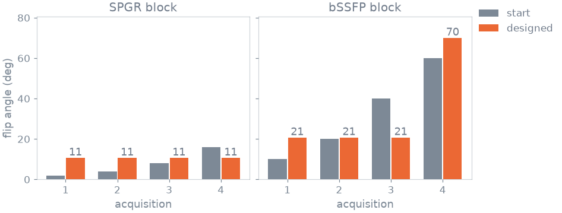
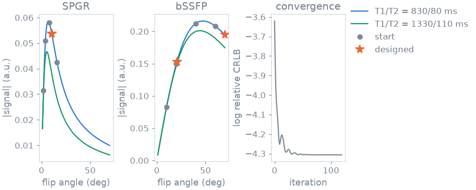
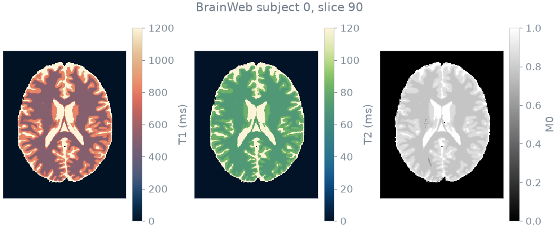
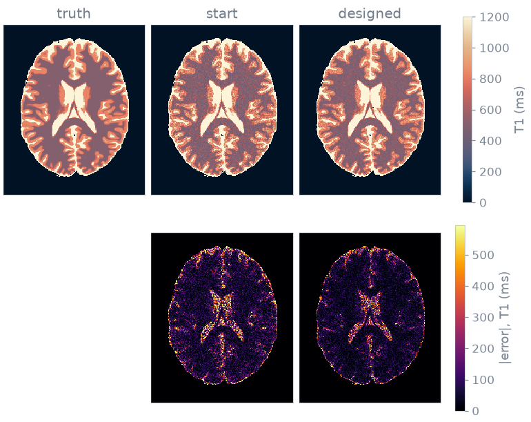
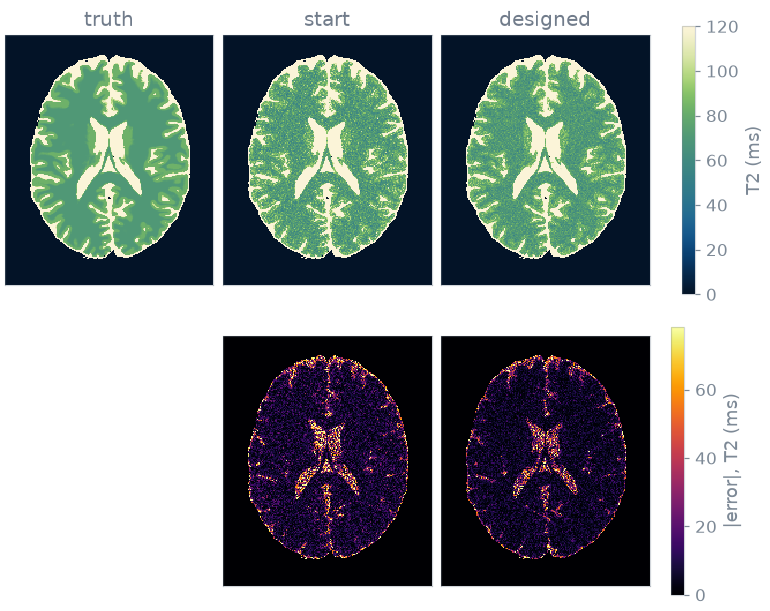

Note
Go to the end to download the full example code or to run this example in your browser via Binder.
Joint relaxometry protocol design#
In this example you choose the flip angles of a DESPOT protocol so that a joint fit of T1 and T2 is as precise as possible [1]. DESPOT estimates T1 from spoiled gradient-echo scans at several flip angles and T2 from balanced SSFP scans. A joint fit uses all the data for both parameters.
The cost is a Cramer-Rao bound: the lowest variance an unbiased estimate can have, given the derivative of the signal with respect to every parameter estimated. You minimize it over the flip angles, then play the designed protocol on a BrainWeb slice and compare the error of the fitted maps with the bound.
Prerequisites: Course lesson 1. Your first simulation.
Sequences#
A design has three pieces. A simulator with the tissue fixed on it, so that
only the parameters under design are left to give. A cost. And the bounded
parameters that SequenceDesign adjusts.
Here the simulators are an SPGR and a bSSFP sequence, both in closed form.
You construct and call them the same way as a sequence that plays events. The
tissues are white and grey matter at 3 T, and you design for both at once.
NOISE is the noise standard deviation as a fraction of the fully relaxed
magnetization:
import torch
import blochsim
from blochsim.optim import Bounded, SequenceDesign
from blochsim.simulators import SPGRSimulator, bSSFPSimulator
T1_MS = torch.tensor([830.0, 1330.0])
T2_MS = torch.tensor([80.0, 110.0])
NOISE = 0.005
spgr = SPGRSimulator(TE=2.0, TR=6.0, T1=T1_MS, T2star=T2_MS, M0=1.0, B0=0.0)
ssfp = bSSFPSimulator(TE=2.5, TR=5.0, T1=T1_MS, T2=T2_MS, M0=1.0, B0=0.0)
Cost#
You estimate four parameters jointly: T1, T2, the proton density M0 and the off-resonance B0. M0 and B0 are nuisance parameters, estimated because they affect the data and not because the design is for them.
The two sequences carry different information. The spoiled steady state in
closed form depends on T2* and not on T2, so its T2 row is exactly zero. Each
block is blind to something, and the Fisher matrix adds them up. rows
stacks the derivatives of one block with a zero row for each parameter it is
blind to, and crlb() turns the stacked derivatives into a
bound on each parameter:
JOINT = ("T1", "T2", "M0", "B0")
def rows(simulator, **design):
present = [name for name in JOINT if name in simulator.exposes]
_, jacobian = simulator.jacobian(present, **design)
placed = jacobian.new_zeros(jacobian.shape[:-2] + (len(JOINT), jacobian.shape[-1]))
where = torch.tensor([JOINT.index(name) for name in present])
return placed.index_copy(-2, where, jacobian)
def bounds(spgr_flip, ssfp_flip):
together = torch.cat(
(rows(spgr, flip=spgr_flip), rows(ssfp, flip=ssfp_flip)), dim=-1
)
return blochsim.crlb(together, noise_variance=NOISE**2)
Dividing each bound by its parameter squared makes the terms dimensionless, so a T2 of 100 ms and a T1 of 1000 ms are weighted by how well they are known and not by how large they are. The logarithm makes the gradient relative, so the design does not depend on the noise level:
def precision(spgr_flip, ssfp_flip):
"""Relative variance of T1 and T2, averaged over the design tissues."""
bound = bounds(spgr_flip, ssfp_flip)
relative = bound[..., 0] / T1_MS**2 + bound[..., 1] / T2_MS**2
return relative.mean().log()
Design#
The protocol has four scans of each kind, initialized with a spread of angles.
Bounded constrains each angle to the range the scanner
plays:
spgr_start = torch.tensor([2.0, 4.0, 8.0, 16.0])
ssfp_start = torch.tensor([10.0, 20.0, 40.0, 60.0])
design = SequenceDesign(
precision,
spgr_flip=Bounded(spgr_start, 1.0, 40.0),
ssfp_flip=Bounded(ssfp_start, 1.0, 70.0),
)
result = design.minimize(iterations=120, learning_rate=0.3)
spgr_designed = result.parameters["spgr_flip"]
ssfp_designed = result.parameters["ssfp_flip"]
The bound gives the standard deviation of each estimate, in percent of the value itself:
start sigma(T1)/T1 = 11.0%, 12.9% sigma(T2)/T2 = 10.1%, 12.1%
designed sigma(T1)/T1 = 7.4%, 8.9% sigma(T2)/T2 = 7.4%, 9.1%
designed in 3.6 s
Flip angles#
The protocol has eight scans, four spoiled and four balanced, which differ only in flip angle:

The design collapses the eight angles onto three and repeats them. The information sits at a few places on each curve, and a fixed number of scans is best placed there and not on an even sampling of the curve.
The SPGR angle lands above the Ernst angle of both tissues, where the curve separates the two T1 values most sharply. The peak itself is where the signal is largest and says least. The two bSSFP angles sit either side of the steady-state maximum, which makes the pair sensitive to T2. The upper one is against its limit and not at an interior optimum.

Phantom#
The phantom is BrainWeb subject 0, slice 90, the one the parameter-inference examples map. Its fuzzy tissue memberships give a T1, a T2 and a proton density at every voxel. You play both protocols on it and compare the fitted maps with the truth.

Joint fit#
The two blocks are one experiment, and you fit them as one. A
Simulator plays each block and concatenates what they
record. The fit is the same for both protocols: the same nonlinear least
squares over the same four unknowns, from the same starting values:
from blochsim.estimators import NonlinearLeastSquares
from blochsim.model import Simulator
class JointRelaxometry(Simulator):
"""Both blocks at fixed flip angles, as one signal model."""
properties = ("T1", "T2", "M0", "B0")
def __init__(self, spgr_flip, ssfp_flip):
self.spoiled = SPGRSimulator(TE=2.0, TR=6.0, flip=spgr_flip)
self.balanced = bSSFPSimulator(TE=2.5, TR=5.0, flip=ssfp_flip)
def evaluate(self, properties, **sequence):
T1, T2 = properties["T1"], properties["T2"]
M0 = properties.get("M0", 1.0)
B0 = properties.get("B0", 0.0)
return torch.cat(
(
self.spoiled.simulate(T1=T1, T2star=T2, M0=M0, B0=B0),
self.balanced.simulate(T1=T1, T2=T2, M0=M0, B0=B0),
),
dim=-1,
)
The noise is independent in the real and imaginary channels, each at the standard deviation the bound was computed with. Simulate the slice with the designed protocol, add the noise and fit every voxel:
UNKNOWN = {
"T1": (200.0, 5000.0),
"T2": (20.0, 600.0),
"M0": (0.1, 2.0),
"B0": (-50.0, 50.0),
}
generator = torch.Generator().manual_seed(7)
joint = JointRelaxometry(spgr_designed, ssfp_designed)
clean = joint.simulate(B0=0.0, **truth)
noise = torch.randn((2, *clean.shape), generator=generator, dtype=torch.float32)
measured = clean + NOISE * torch.complex(noise[0], noise[1])
problem = NonlinearLeastSquares(
joint,
bounds=UNKNOWN,
initial={"T1": 1000.0, "T2": 100.0, "M0": 1.0, "B0": 0.0},
).fit(UNKNOWN, noise_std=NOISE, seed=0)
maps = problem(measured) # {"T1": ..., "T2": ..., "M0": ..., "B0": ...}
38980 joint fits in 3.6 s
Predicted precision#
The design bound was computed for two tissues. Evaluated at the relaxation times of each voxel, it gives a map of the predicted precision, against which the measured error is compared:
def predicted_sigma(spgr_flip, ssfp_flip):
"""Relative standard deviation the bound allows, voxel by voxel."""
at_voxel = tuple(
sequence.bind(T1=truth["T1"], M0=1.0, B0=0.0, **{name: truth["T2"]})
for sequence, name in (
(SPGRSimulator(TE=2.0, TR=6.0), "T2star"),
(bSSFPSimulator(TE=2.5, TR=5.0), "T2"),
)
)
together = torch.cat(
(rows(at_voxel[0], flip=spgr_flip), rows(at_voxel[1], flip=ssfp_flip)), dim=-1
)
bound = blochsim.crlb(together, noise_variance=NOISE**2)
return {
"T1": bound[..., 0].sqrt() / truth["T1"],
"T2": bound[..., 1].sqrt() / truth["T2"],
}
No unbiased estimator beats the bound. The fit below lands about a fifth above it for both protocols, so the reduction the bound predicts is also the reduction measured, which is the check that the design optimized the right quantity. Both are root-mean-square, because a bound is a standard deviation. The median absolute error is about two thirds of a standard deviation and would understate the error by that factor:
T1 T2
measured bound measured bound
start 13.8% 11.3% 13.3% 10.6%
designed 9.8% 8.1% 9.8% 8.1%
Maps#
The fitted maps and the absolute error of each protocol. The designed protocol gives lower noise in both maps.


Specification#
What this example did, stated the way you would ask an agent for it:
With blochsim, design the flip angles of a joint DESPOT protocol: four
SPGR scans (TE 2 ms, TR 6 ms, up to 40 degrees) and four bSSFP scans (TE
2.5 ms, TR 5 ms, up to 70 degrees), for white and grey matter at 3 T.
Estimate T1, T2, M0 and B0 jointly. Minimize the log of the summed
relative Cramer-Rao bounds of T1 and T2 with SequenceDesign. Play the
start and designed protocols on BrainWeb slice 90 with noise of 0.5 %,
fit every voxel with NonlinearLeastSquares, and compare the RMS error of
the T1 and T2 maps with the bound.
References#
Total running time of the script: (0 minutes 10.382 seconds)